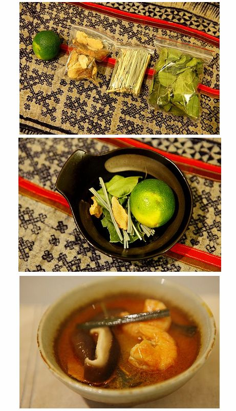

自己做了冬阴宫汤，有那么点意思。遗憾的是对虾太小，椰奶是椰奶粉冲的，盐有点儿多，其他基本相似。香料的味道十足，来自右边两袋，不知道如何称呼，事实上这三袋佐料都不知道，请高人赐教。

是香茅片和薄荷叶么？
第二、三袋分别是香茅(lemon grass)和卡菲尔青柠叶(Kaffir lime leaf)。 第一袋看不清，不过我所知道的冬阴功汤食谱也没有这个样子的香料。烹饪用椰奶应该有罐头的，好很多，你找找看。
俺们这个是泰国滴的香料呀,配好的,不过右边两袋的味道很“冬阴宫汤“哇.
最左边是啥？青橘子？
青柠檬。
那三袋香料从右到左分别是：柠檬叶、柠檬香茅、黄姜
台布蛮好看的~
你是买的现成的配料吗，我上次做了次不是特别好，想求更地道的做法。特别爱吃冬阴功
六楼正解，良姜、香茅、柠檬叶
天赋异禀，非常有感觉了。
天赋异禀，非常有感觉了。麦德龙有椰浆卖。
麦德龙里这些外来的东西很全，价格比苏果便宜。 干果还是东麒路的市场实惠，不过630一箱的开心果至少要四家人分才行。
存档只读，评论已关闭。
Name (required)
Email (will not be published) (required)
Website
« 四面佛@曼谷 | 过节 »
12 Responses to “自制“冬阴宫汤””
2011-01-27
是香茅片和薄荷叶么？
2011-01-27
第二、三袋分别是香茅(lemon grass)和卡菲尔青柠叶(Kaffir lime leaf)。 第一袋看不清，不过我所知道的冬阴功汤食谱也没有这个样子的香料。烹饪用椰奶应该有罐头的，好很多，你找找看。
2011-01-27
俺们这个是泰国滴的香料呀,配好的,不过右边两袋的味道很“冬阴宫汤“哇.
2011-01-27
最左边是啥？青橘子？
2011-01-28
青柠檬。
2011-01-28
那三袋香料从右到左分别是：柠檬叶、柠檬香茅、黄姜
2011-01-28
台布蛮好看的~
2011-01-30
你是买的现成的配料吗，我上次做了次不是特别好，想求更地道的做法。特别爱吃冬阴功
2011-01-31
六楼正解，良姜、香茅、柠檬叶
2011-02-01
天赋异禀，非常有感觉了。
2011-02-01
天赋异禀，非常有感觉了。麦德龙有椰浆卖。
2011-02-08
麦德龙里这些外来的东西很全，价格比苏果便宜。
干果还是东麒路的市场实惠，不过630一箱的开心果至少要四家人分才行。
Leave A Reply
存档只读，评论已关闭。